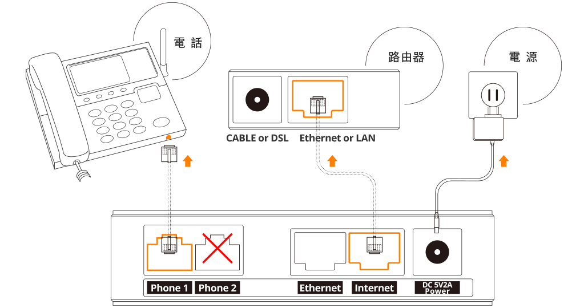
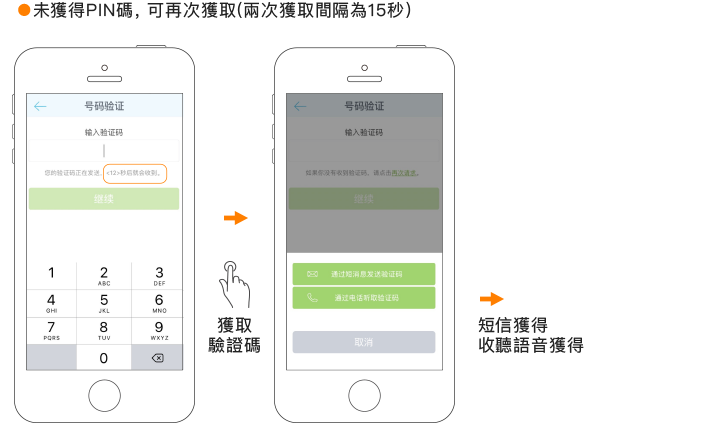
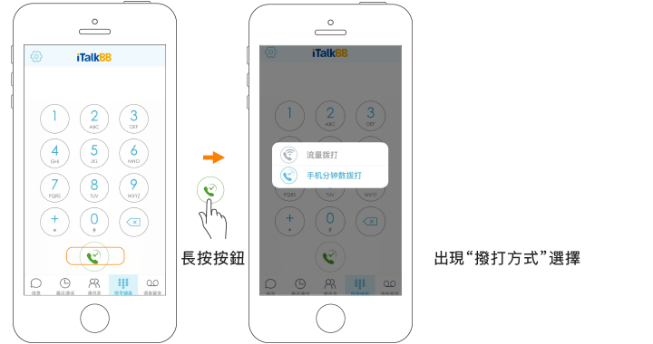
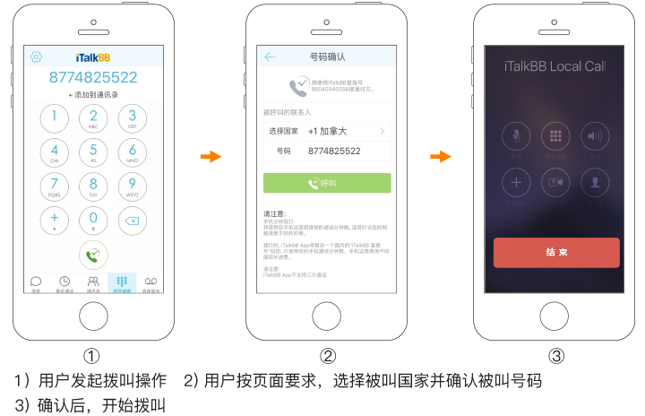

電話盒子安裝
安裝示意圖
iTalkBB蜻蜓電話盒子
使用路由器 (Router) 時，iTalkBB蜻蜓電話的安裝步驟：
-
請將網線的一頭插在iTalkBB蜻蜓電話盒的“Internet"插口，另一頭接在您家的路由器的Ethernet（LAN）插口。
-
請將電話線的一頭插在iTalkBB蜻蜓電話盒的“Phone 1"插口，另一頭接在您的電話機上。
-
請給iTalkBB蜻蜓電話盒接上電源。
沒有路由器 (Router) 只有Modem時，iTalkBB蜻蜓電話的安裝步驟：
-
斷開原有Modem與PC的連接，將網線的一頭插在iTalkBB蜻蜓電話盒子的“Internet"插口，另一頭接在Modem的"LAN"插口。
-
請將網線的一頭接到iTalkBB蜻蜓電話盒的“LAN"插口，另一頭接到電腦的“Ethernet"插口。
-
請將電話線的一頭插在iTalkBB蜻蜓電話盒的“Phone 1"插口，另一頭接在您的電話機上。
-
請給iTalkBB蜻蜓電話盒接上電源。
撥打方式
蜻蜓電話撥打方式：
-
撥打美國和加拿大地區的電話：請撥1 + 地區號碼 + 電話號碼，例如：1-202-888-8888。
-
撥打國際電話：請撥011 + 國家代碼 + 電話號碼，例如：011-86-10-88888888。
-
使用免費網內通話服務與其他iTalkBB蜻蜓電話用戶通話：請撥對方的899號碼。
-
使用美國、加拿大傳真：請撥# + 1 + 傳真號碼，例如：#+1+888-888-8888。
iTalkBB蜻蜓手機App國際長途撥打方式：
-
您可以掃一下二維碼直接下載iTalkBB蜻蜓手機App，或者在Apple App Store和Google Play輸入“iTalkBB”搜索並安裝App。


-
安裝後, 先瀏覽“歡迎頁面”, 並點擊確認服務條款。
-
第一次使用App時，需要綁定手機號。
 -
手機號驗證成功後可以開始使用App，選擇“Wi-Fi撥打”*或“手機分鐘數撥打”兩種撥打方式：
*沒有Wi-Fi的情況下，使用“手機流量撥打”。
> “Wi-Fi撥打”：在Wi-Fi環境下，推薦使用Wi-Fi撥打
> “手機流量撥打”：在沒有Wi-Fi的環境下，還可以選擇使用手機流量撥打
> “手機分鐘數撥打”：使用手機運營商提供的分鐘數撥打
 -
遵循以下方式，可以直接輸入被撥打號碼：

中國號碼950撥打方式：
任何中國的親友聯繫您，直撥這個950開頭的11位號碼，就能接通您在美國的電話，無需支付任何國際長途費用，就像撥打一個普通市話一樣。親友撥打您的950號碼時，只需直接輸入950號碼，無需在號碼前加撥1或其他任何國際區號。了解詳情
台灣通用號碼撥打方式：
您的iTalkBB蜻蜓電話附帶一個台灣通用號碼的服務。在台灣的親友無需支付任何國際長途費用撥打方式：先撥打02-40660660或40502999的任意1個，接通後輸入您的899號碼。了解詳情
轉號步驟及查詢
轉號步驟：
-
在線填寫Letter of Authorization完成轉號申請。
-
或者您需要把現在的電話帳單發給Portin@iTalkBB.com或傳真到1-800-872-2059。
轉號須知：
-
您現在的帳單首頁必須包括您的名字、地址和電話號碼，並且與Letter of Authorization上一致。
-
您在轉號申請時所提交的名字及地址，必須是所轉號碼在電話公司註冊的名字和地址，即您號碼的Service Address。如果您對此不清楚，請聯繫所在的電話公司，諮詢這個號碼的CSR (Customer Service Record) 信息。如果您提供的信息不準確，將會造成轉號被拒，延長轉號時間，給您造成不必要的麻煩。
-
在轉號碼期間，請不要取消您現有的本地電話服務，否則號碼將被回收。
-
轉號成功後，您原本的電話服務將自動被取消，不需要您聯繫您的電話公司。如果為保險起見，您可以向您的電話公司確認。
轉號狀態查詢：
轉號一般需要2-6周的時間。轉號過程中我們會發郵件通知您轉號的進度，或者您可以登入網上帳戶或者撥打1-877-482-5503，來查詢您的轉號狀態。
轉號成功：
轉號成功後，要保留的電話號碼會轉到iTalkBB蜻蜓電話，您原本的電話服務將自動被取消。
轉號失敗：
大部份的電話號碼都可成功轉號，但有少數DSL的用戶，由於上網和電話線在一起，所以無法只取消電話服務而保留上網服務。因此，如果您是DSL的用戶，請在申請轉號前，與你的電話公司確認是否可以轉號後再與我們聯繫轉號，否則可能會造成號碼丟失等損失。
產品功能
iTalkBB蜻蜓手機App-讓您用手機直接撥打國際長途
iTalkBB蜻蜓手機App是一款為iTalkBB蜻蜓蜻蜓電話用戶免費提供國際通話的手機撥打工具，讓您免費或以超低費率撥打國際長途電話，並支持Wi-Fi，數據，及手機分鐘共3種撥打模式。您在使用時，只需直撥目的地號碼，也可直接使用手機通訊錄中的聯絡人訊息，無需再輸入接駁號。註冊之後，馬上下載，便能完全替代您現有手機公司的付費國際長途功能。查看使用方式，請點擊iTalkBB蜻蜓手機APP國際長途撥打方式。
中國號碼950
iTalkBB蜻蜓電話的用戶除了獲有一個常規的美國號碼之外，可以再獲得一個以950開頭的"模擬中國本地號碼"。美國的親友聯繫您，撥打您的美國號碼。而您所有的中國親友聯繫您，只要直撥這個950開頭的11位號碼，就能打通您在美國的電話，無需任何轉接，完全無需支付任何國際長途費用，就像在撥打一個普通市話一樣。使用說明：
> iTalkBB蜻蜓電話的用戶根據計劃不同，自動享有不同時長的免費中國號碼950服務；優惠期滿後，可繼續以 $0.99/月的優惠價格享受此服務（原價$2.99/月）。
> 在您註冊服務後，我們會將您的950號碼發送到您的郵箱。
> 您也可以登入您的網上帳戶，在"帳戶資訊"頁面查到您的950號碼，並在“增值服務"菜單下“特色服務"中，選擇更換號碼或取消本項服務。
如果您是iTalkBB蜻蜓電話用戶，尚未開通“中國號碼950”服務，您可以撥打客戶服務熱線1-877-482-5503開通，並諮詢“中國號碼950”相關最新優惠。
台灣通用號碼
香港和台灣本地直撥號碼
iTalkBB蜻蜓電話的用戶除了獲有一個常規的美國號碼之外，可以再購買模擬的香港和台灣本地號碼。美國的親友聯繫您，撥打您的美國號碼。而您所有的當地親友聯繫您，只要直撥您購買的當地直撥號碼，就能打通您在美國的電話，完全無需支付任何國際長途費用，就像在撥打一個普通市話一樣。使用說明：
>
香港本地號碼：只需$4.99/月，可獲+852國碼的香港本地號碼，如+852--XXXX-XXXX。
台灣本地號碼：只需$4.99/月，可獲台北區碼02的台灣本地號碼，如+886-2-XXXX-XXXX。
> 在您開通本服務後，我們會將您的本地直撥號碼發送到您的郵箱，您也可以登入您的網上帳戶，在"帳戶資訊"頁面查到您的本地直撥號碼；您的本地直撥號碼是專屬於您的號碼，可以在“增值服務"菜單下“特色服務"中，選擇更換號碼或取消本項服務。
來電顯示
來電等候
免費網內通話
如果您有親朋好友也是iTalkBB蜻蜓電話的用戶，那麼您只要直撥他們的899號碼，就能和他們免費通話。
E911
保護您的住宅安全，對iTalkBB蜻蜓電話來說非常重要。iTalkBB蜻蜓電話用VOIP網路為您提供緊急呼叫服務。在遇到突髮狀況，當您使用電話尋求救援時，救援機構能立刻看到您在iTalkBB蜻蜓註冊的地址。如果您搬家了，只要登入您的網上帳戶，在“帳戶設定"菜單下選擇 “E911地址"，即可在線更新您的地址。
傳真
iTalkBB蜻蜓電話為您提供免費的國內傳真服務。
使用方法：按#號鍵+1+傳真號碼。
國內傳真服務為免費服務，無功能費用，但使用時間將計入通話時間，按費率收費。全球包月計劃用戶則無需支付任何費用。
關於iTalkBB蜻蜓電話計劃
30天試用期
iTalkBB蜻蜓電話為您提供30天試用退款保證。購買後30天之內您可以隨時取消服務：如果您的計劃內服務使用時間（含撥打和接聽）在500分鐘之內，您被收取的激活費、月費和郵費將全額返還（除計劃外通話費用之外）；如果超過500分鐘，月費將不會被返還。
如何激活服務及服務開始日期
您不需要自己激活服務。您的電話的服務會在您註冊完成的第6天或是您打第一次電話時自動開始。在這兩個時間中，從最早的時間開始計算。
更改計劃
當您購買iTalkBB蜻蜓電話後，您可以隨時轉到更加高級的計劃，無需支付任何費用。
當您需要從高級計劃降級到基礎計劃時：如果您在30天試用期內，則無需支付任何費用；如果您已經過了30天試用期且在合約期內，您需支付$29.99計劃更改費或違約金（視計劃而定）；如果您已經不在合約期內，則可以隨時更改計劃，無需支付任何費用。
請撥打iTalkBB蜻蜓客戶服務熱線1-877-482-5503，我們專業的客服人員會幫助您更改計劃。
取消計劃
購買後30天之內您可以隨時取消服務。您被收取的激活費、月費和郵費將全額返還（除計劃外通話費用之外）。如果30天試用期內，您的使用時間（含撥打和接聽）超過500分鐘，將不退還月費。
30天之後，您已經過了試用期並且在合約期內。如果您在合約期內取消，需要支付$99手續費，以及合約計劃享受的優惠差額。如果您購買的是無合約計劃，或是合約期已滿，則您都可以輕鬆免費取消服務。
請撥打iTalkBB蜻蜓24小時客戶服務熱線1-877-482-5503，向我們的客服人員提出您的取消要求，之後您需把iTalkBB蜻蜓電話盒子寄回到客服人員提供的地址，即可完成取消。
使用iTalkBB蜻蜓電話是否需要網路
iTalkBB蜻蜓電話的服務需要網路服務。您家需要有Cable、DSL（寬帶）或Fiber（光纖）等網路服務，才能使用iTalkBB蜻蜓電話。
iTalkBB蜻蜓電話899號碼
899號碼是您的iTalkBB蜻蜓電話內部號碼，在您的iTalkBB蜻蜓電話盒上可找到以“899”開頭的號碼，如下圖所示：
蜻蜓電話899號碼示意圖
Locate Your 899 Number
您可於iTalkBB蜻蜓電話盒子正面的貼紙上找到899號碼
The 899 number is located on a sticker on your iTalkBB Home Phone Box
iTalkBB蜻蜓電話盒子
iTalkBB Home Phone Box
899號碼用途如下：
推薦親友，積分獎勵
您介紹親戚朋友註冊iTalkBB蜻蜓服務時，iTalkBB蜻蜓會為您提供相應的積分獎勵和豐富的推薦獎品，親友也能獲得額外的優惠。
如何推薦
如何將獎勵積分兌換為話費
點此登入您的網上帳戶，在“積分獎勵”菜單下的積分管理頁，可將您的積分兌換成話費使用。
如何計算特殊推薦優惠的人數和收到實物獎品的時間
特殊推薦優惠活動不定期舉辦。參與此優惠活動的推薦人，被推薦人數的統計以自然月為單位進行計算，即在一個自然月中推薦人數到達某個數量時，即可獲得對應獎勵。在您推薦的親友使用iTalkBB蜻蜓產品過了30天試用期後，我們會開始處理您的獎品寄送，您一般會在開始處理後15個工作日內收到獎品。
電話撥打故障
電話無撥號音
-
請確認您家的網路環境是否正常。
-
請確認您的電話盒是否已正常安裝。
電話能撥出無法接聽
-
請確認您家的電話是否在帳戶激活24小時之內，或轉號成功後24小時以內；iTalkBB蜻蜓電話通常在激活後或轉號成功後即可正常使用，但是在某些情況下，需要24小時之後才可正常接聽。
-
請確認您家電話機的電話線接在iTalkBB蜻蜓電話盒的“Phone 1"接口，而非“Phone 2"接口上。
-
如果您家的電話設置了某些高級功能，也會導致無法正常接聽電話，請拿起電話，確認聽到的撥號聲是否正常，如果聽到的是如3聲短音1聲長音等特殊撥號聲，請嘗試取消以下特殊功能：
> 取消呼叫轉移：拿起電話，依次按*73。
> 取消來電拒接：拿起電話，依次按*79。
> 取消直接進入語音信箱：拿起電話，依次按*993。
電話可接聽無法撥出
> 請確認您撥號的方式是否正確，如撥打國際長途時需撥011+國家區號+對方號碼，點此查看詳細撥打方式。
> 請確認您的電話機是否有故障，可嘗試更換電話機，或重新啟動電話機。
通話質量不佳
> 請確認您的網路使用是否正常，一般如果通話中您能聽清楚對方說話，但對方無法聽清您說話，則有可能是您的網路狀況不佳造成的。如果您在運行下載軟件或因為其他原因佔用了網路帶寬，會造成這種現象。
> 如果您聽到“沙沙"或靜電噪音，則可能是聽筒接觸不良或電話線接觸不良造成，請更換電話線重新連接。
> 如果您的電話連接了分機，並且沒有斷開之前電話公司設置的電話總線，也會產生雜音、迴音等情況；請斷開之前電話公司的電話總線後，再連接分機。
> 如果您使用的是無繩電話，請更換頻率，再測試一下通話質量是否有所改善。
> 在排除以上可能性後，請嘗試重新啟動iTalkBB蜻蜓電話盒。
電話盒安裝故障
指示燈全不亮
-
iTalkBB蜻蜓電話盒子安裝正確時的狀態為：
> 電源燈、網路燈、Phone 1燈長亮。
> 在通話時Phone1燈閃爍，網路燈有時閃爍也屬於正常現。
-
3個燈全不亮，則表明盒子沒有工作，請檢查電源連接，並更換電源插座嘗試。如果電源有電，電源連接無誤，則為設備問題，請聯繫我們。
指示燈中只有電源燈亮
-
iTalkBB蜻蜓電話盒子安裝正確時的狀態為：電源燈、網路燈、Phone 1燈長亮；在通話時Phone 1燈閃爍，網路燈有時閃爍也屬於正常現象。
-
如果只有電源燈亮，則為連接問題，請進行如下操作：
> 請檢查網線是否錯誤地接到了黃色的Ethernet接口，正確的連接方法應為連接到iTalkBB蜻蜓電話盒藍色的Internet接口。
> 請檢查您家的Modem/Router/Hub是否正常工作，請更換端口嘗試。
> 請確認網線正常工作，請更換網線嘗試。
指示燈中電源燈和網路燈亮，Phone 1燈閃爍
指示燈中電源燈和網路燈亮，Phone 1燈閃爍，可能為電話沒掛好或分機問題，請進行如下操作：
> 請您檢查您的電話機是否掛好。
> 請拔掉電話盒上的電話線看Phone 1燈是否長亮，如果Phone 1燈長亮，則為電話線或分機問題，如果Phone 1燈閃爍，則可能為電話盒故障。
電源燈、網路燈、Phone 1燈長亮，但電話無法使用
請檢查電話機是否正常，可更換電話機或電話線測試，如Phone 1燈還是一直長亮，不閃爍，則可能為盒子故障。
功能故障
無法顯示來電
> 如果您只有部份來電無法顯示，而其他來電可以顯示，則有可能是有些號碼設置了屏蔽的功能。
> 如果所有來電都無法顯示，請確認您的電話機電池有電，顯示屏正常，可嘗試更換電話機。
> 請檢查您的來電顯示功能是否打開，請拿起電話，依次按*65打開來電顯示功能，按*85關閉來電顯示功能。
三方通話故障
> 請確認您撥打三方通話的方法正確。三方通話使用方法為：打通第一個電話後，按應答鍵或Flash鍵，就可以讓對方暫等，聽到3聲短音後，再撥第三方電話號碼，接通後再按應答鍵或Flash鍵，三方便可一起通話。
> iTalkBB蜻蜓電話現在只支持中國大陸（不包括港澳台），美國、加拿大、英國、新加坡、澳洲的三方通話。
> 在排除以上可能性後，請嘗試重新啟動iTalkBB蜻蜓電話盒。
傳真無法正常使用
> 請確認您的撥號方法正確，使用傳真時請依次按#1+對方傳真號碼；如果還是無法正常使用，可嘗試另兩種更利於發送傳真的通訊協議：撥打333+1+對方傳真號碼，或者撥打*+99+1+對方傳真號碼。
> 如果您使用的是Cable網路，請嘗試直接把電話盒接在Modem或Router後面嘗試發送。
> 請嘗試將傳真機的傳真速度 (Speed) 到9600bps或者更低。
> 如果您的傳真機上有ECM功能（Error Correction Mode自動檢驗錯誤模式），請關閉此功能。